- I. 主理人说
- II. 毒奶预配置文件一键配置文件&解锁各种姿势
- III. 基础知识普及
- IV. 订阅
- V. 节点
- VI. 默认策略/自定义策略
- VII. 策略组
- VIII. 分流规则
- IX. 网络活动日志
- X. 进阶教程
- XI. 创建策略及组
- XII. 如何创建新策略
- XIII. 策略模式解释
- XIV. 重点知识
- XV. 如何给创建的策略添加节点
- XVI. 如何给策略添加节点
- XVII. 分流规则如何搭配策略
- XVIII. DIY分流规则
- XIX. 订阅分流规则
- XX. 自定义策略及其图标
- XXI. 注意事项
- XXII. 哪里搞图标
- XXIII. 节点分组及其分组图标设置
- XXIV. 哪里搞图标
- XXV. 附加知识点 FAQ
- XXVI. 图标双排
- XXVII. Quantumult X 双排的开启方式:
- XXVIII. 联系主理人
- XXIX. 附注
本文隶属于 实用工具/科学上网 分类，点击分类名称可以查看更多相关文章；
I. 主理人说
用好一个工具不难，只要肯放弃。另外，博客提供一个 Quantumult X 预配置文件供大家使用；
II. 毒奶预配置文件一键配置文件&解锁各种姿势
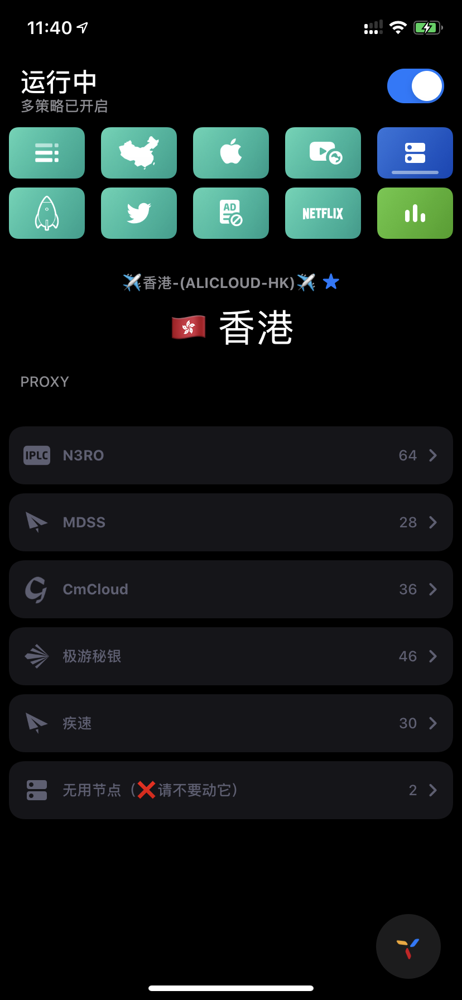
0.使用方法：https://github.com/limbopro/Profiles4limbo
1.利用 Quantumult X 自带的 [配置文件] - [下载] 功能对 Quantumult X 各个模块即参数进行预配置；
2.利用 NobyDa 贡献的脚本解锁各项事务，VSCO，Termius，等；
3.另外默认配置的是美区App Store下载的 Tiktok；届时自己进 [QuantumultX] - [配置文件] - [编辑] - 找到 Tiktok 修改参数即可
4.Surge/Clash 用户可以使用由毒奶提供的 订阅转换 API，亦能获得相同的效果；https://limbopro.com/archives/subconverter.html
以上。
以下为 本QuantumultX 进阶使用教程 正文；
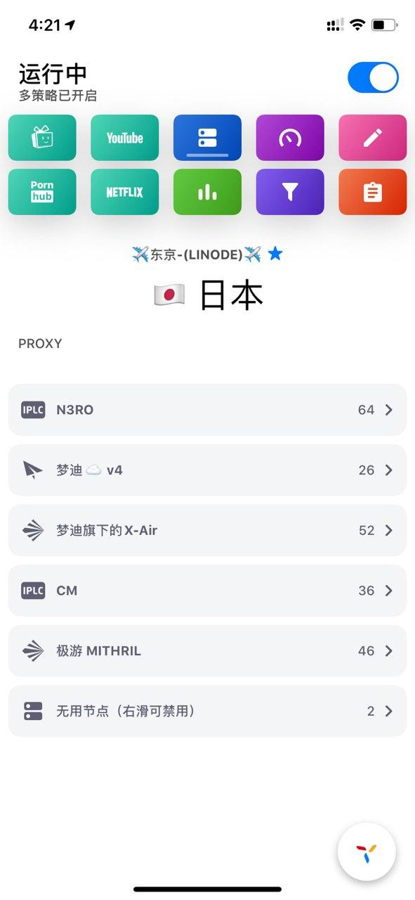
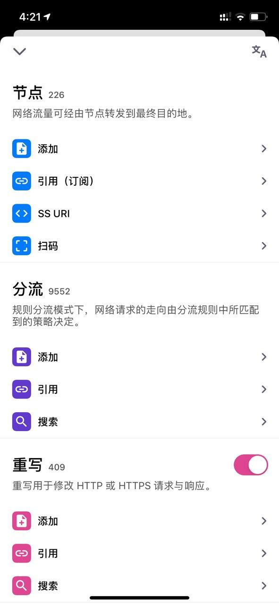
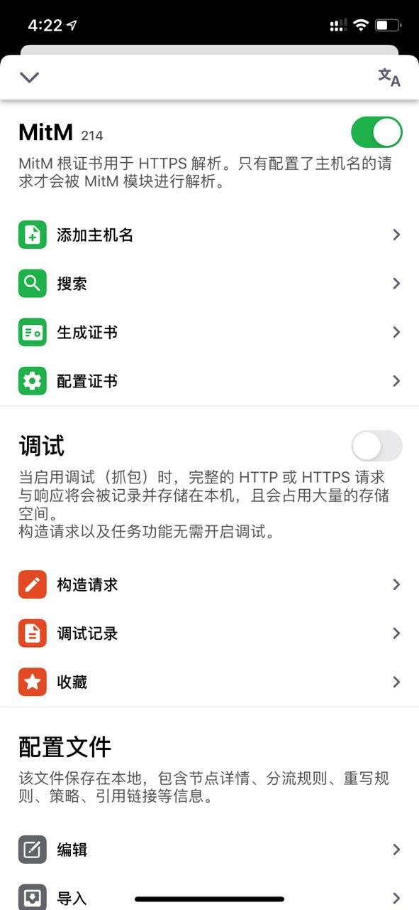
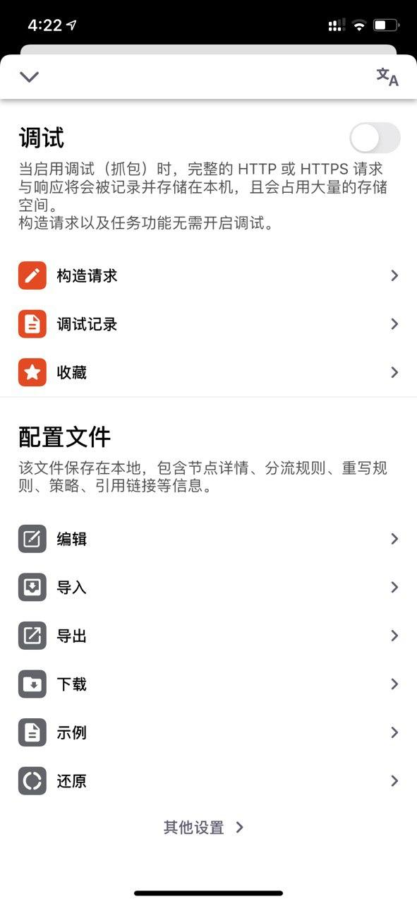
III. 基础知识普及
以下知识点在 Quantumult/Surge/Quantumult X通用；
IV. 订阅
前人栽树后人乘凉，我们也不用一个个去配置就可以远程拉取配置资源，一次性配置完毕，例如机场提供的节点（ip地址/密码/加密方式等等），例如别人写好的分流规则（大陆域名走直连/谷歌走代理...）等等；订阅即可获得；
V. 节点

从机场订阅而来的服务器，均可称之为节点，这些节点默认放在策略PROXY下，可手动选择切换使用；
VI. 默认策略/自定义策略
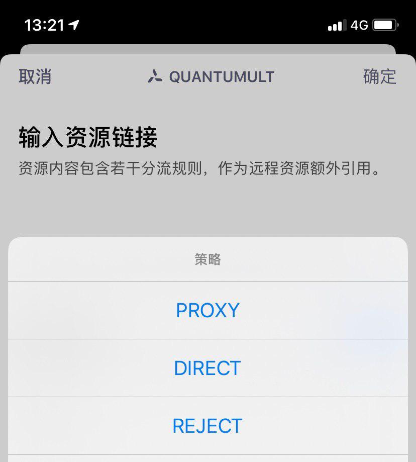
基础即软件自身携带的策略包括：PROXY/DIRECT/REJECT，分别对应中文为代理/直连/拒绝，后文的进阶教程部分会提供如何新建策略以及三个策略（Available/Robin/Static）模式的说明；
VII. 策略组
除了以上 PROXY/DIRECT/REJECT 三条默认策略之外，我们可以通过-节点-引用（订阅）-选取任意节点订阅链接右滑-更多-创建新的策略；详情操作参考本文后文进阶教程部分；
VIII. 分流规则
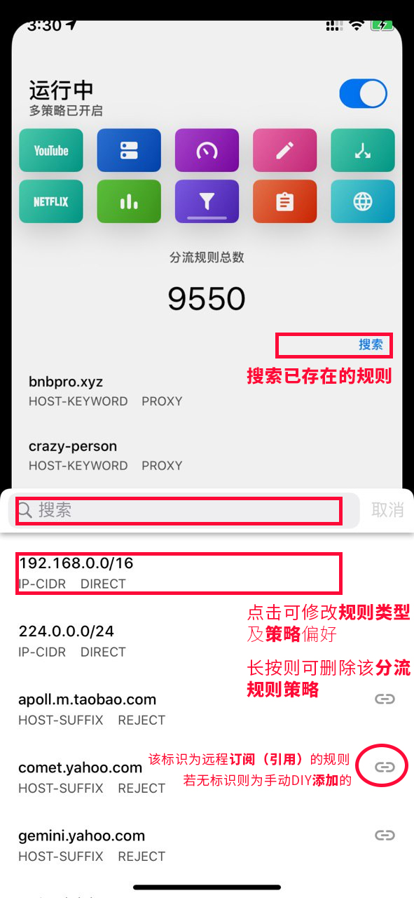
如图，HOST-SUFFIX,apoll.m.taobao.com,REJECT，这是一条分流规则示例：即包含关键字为apoll.m.taobao.com的域名均拒绝；分流规则是要配合策略使用的；你可以指定任意网站如apoll.m.taobao.com是走直连（Ddirect）还是走代理（Proxy）或者干脆拒绝（Reject）连接网络；
添加分流规则
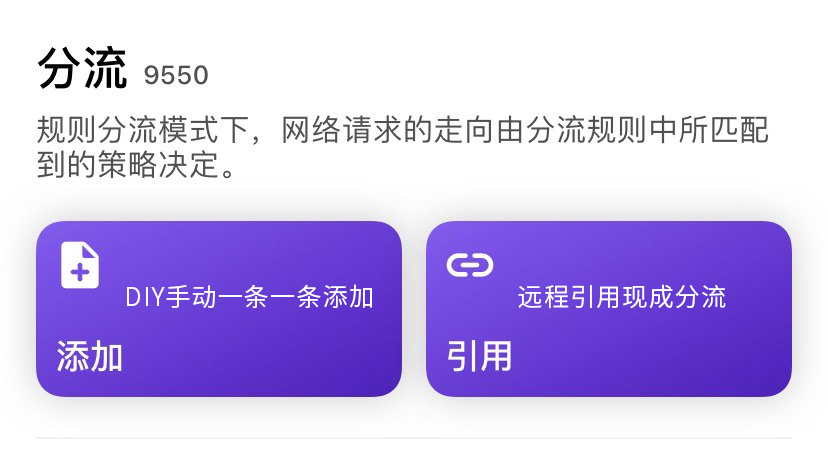
如上图，分流规则跟节点一样均支持远程订阅（引用）/手动DIY添加；
参考上图，手动DIY 添加 的规则的修改与删除；订阅（引用）的分流规则，依然从订阅处删除或禁用；
规则的类型
25.10.2019 更新
添加分流规则时对类型选择，以及类型的相关知识；
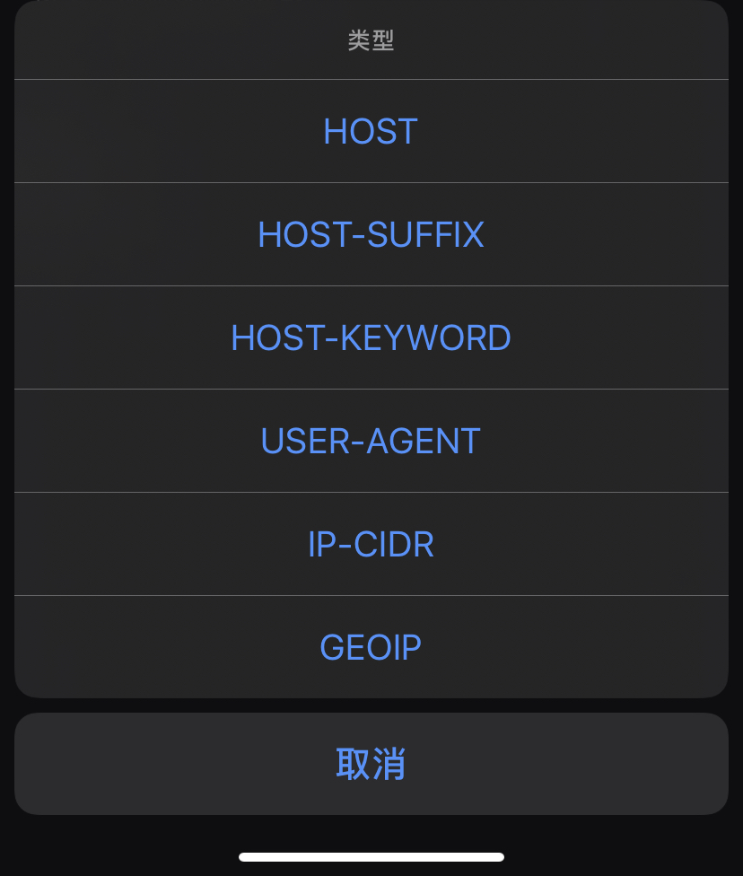
从上到下，依次为HOST（完整域名匹配，举例limbopro.com）/HOST-SUFFIX（域名后缀匹配）/HOST-KEYWORD（域名关键字匹配，举例limboppro）/USER-AGENT（浏览器用户代理匹配，举例*abc?）/IP-CIDR（无类别域间路由例如192.168.xx）/GEOIP（GeoIP数据库IP匹配，参数填US，则为美国 ip 数据库匹配，所有美国IP匹配该规则则执行）；
分流规则如何订阅
好用的分流规则，大都已经已有爱好者写好，直接引用即可；
可参考此文；
IX. 网络活动日志
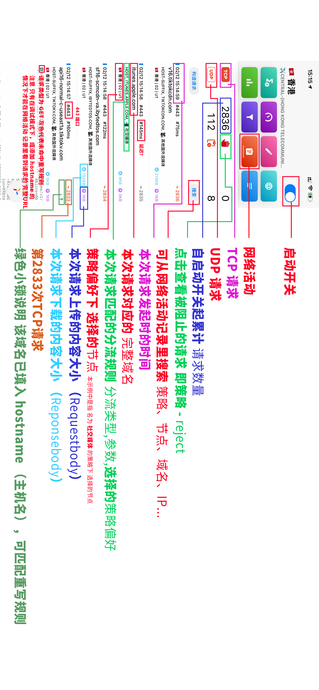
网络活动日志模块：这里可以看到iOS所有网络请求（开启 Quantumult X，任何APP的网络请求都会在这里记录；可以完成一个简单的抓包行为；即如果要给一个新奇的App/或网站抓取做分流规则，在网络活动日志模块就可以找到相关APP网络请求的域名数据等；），时间节点与实际请求发生时间一致，你亦可以利用日志检查节点/策略/分流/重写/MitM的配置是否起作用；
上图中绿色小锁代表MitM(对应-Quantumult X-配置文件-编辑-[mitm]-hostname)命中域名，链接颜色变红则说明rewrite即重写规则（对应-Quantumult X-配置文件-编辑-rewrite_local/rewrite_remote）规则生效；
X. 进阶教程
默认的情况
我相信大家节点都是非常多的，可选择性极多；例如我们看YouTube，分流规则设定默认走PROXY策略，即你选什么节点它就走什么节点；（查看节点的说明；这里很关键的一点是默认情况下走PROXY策略）；
XI. 创建策略及组
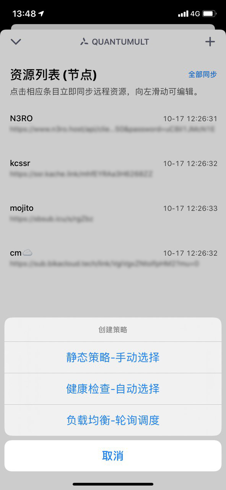
XII. 如何创建新策略
1.进入Quantumult X，点击右下角三菱按钮；
2.找到节点模块下引用，点击；
3.往右滑任意订阅，点击更多即可创建策略；
4.记得填写策略名；
XIII. 策略模式解释
静态策略-手动选择： 跟PROXY一样；（需至少配置一个节点）
健康检查-自动选择： 从第一个节点进行可用性检查，如果可用即选择第一个节点，不可用则继续检查直到节点可用；（需至少配置两个节点）
负载均衡-轮询调度： 轮流调用节点使用，如果使用该策略则访问谷歌时你的ip是一直变化的；（*需至少配置两个节点）
XIV. 重点知识
务必记住每个策略下都可以有很多节点，这些节点是由你自己选择的（可长按策略图标进行增减），PROXY默认拥有所有订阅而来的节点，随每次更新节点订阅时而有所增减，其中的节点需要手动选择使用；
XV. 如何给创建的策略添加节点
策略新建完成后会在Quantumult X主页面显示，如下图；
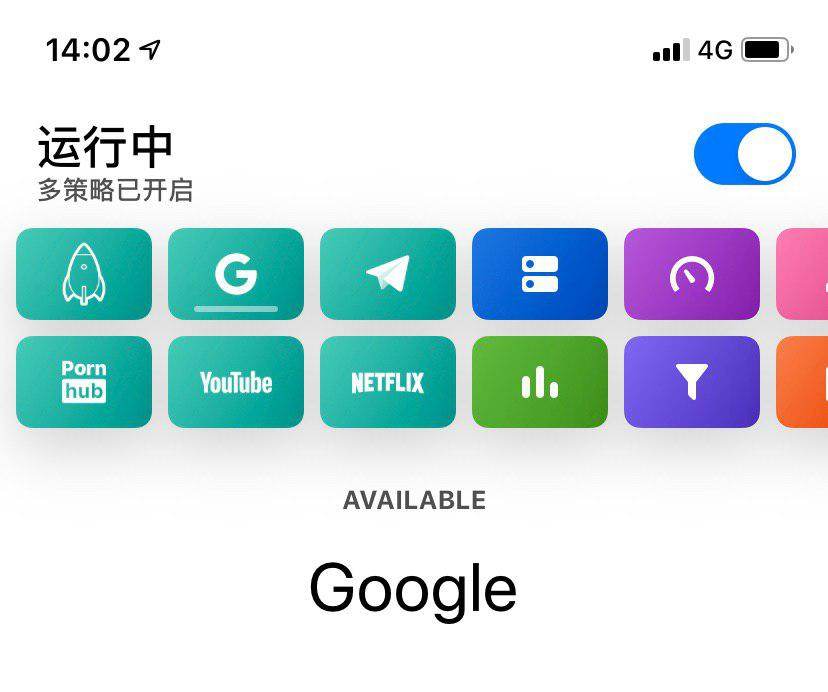
这个名叫Google的策略的图标也是可以自定义的，在后文会有说明；
Google这个策略是我专门给谷歌搜索用的，所以我选择了一些高倍率节点，策略模式选的健康检查（AVAILABLE）以保证其节点可用；如果你要给Netflix创建策略，那就勾选好那些可以看Netflix的节点就好了；
XVI. 如何给策略添加节点
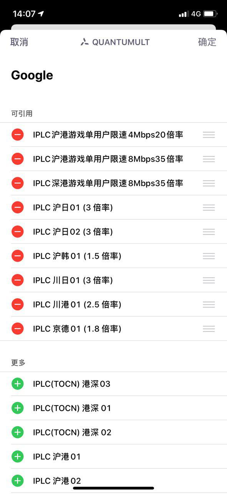
1.长按策略图标，即可弹出上图；
2.按需点击加号或减号增加或删除节点；
3.另外策略组还可以可以嵌套其他策略组（即把其他策略也加进来）；
XVII. 分流规则如何搭配策略
新策略已经建好并已勾选想要的节点，现在需要配合分流规则使用；
1.进入Quantumult X，点击右下角三菱按钮；
2.找到分流模块下引用按钮，点击；
3.左滑任意分流订阅链接，-编辑-开启策略偏好-选取刚刚新建的策略组；
4.以上。
当然，分流-添加-也是可以为单条分流规则绑定策略组的；
XVIII. DIY分流规则
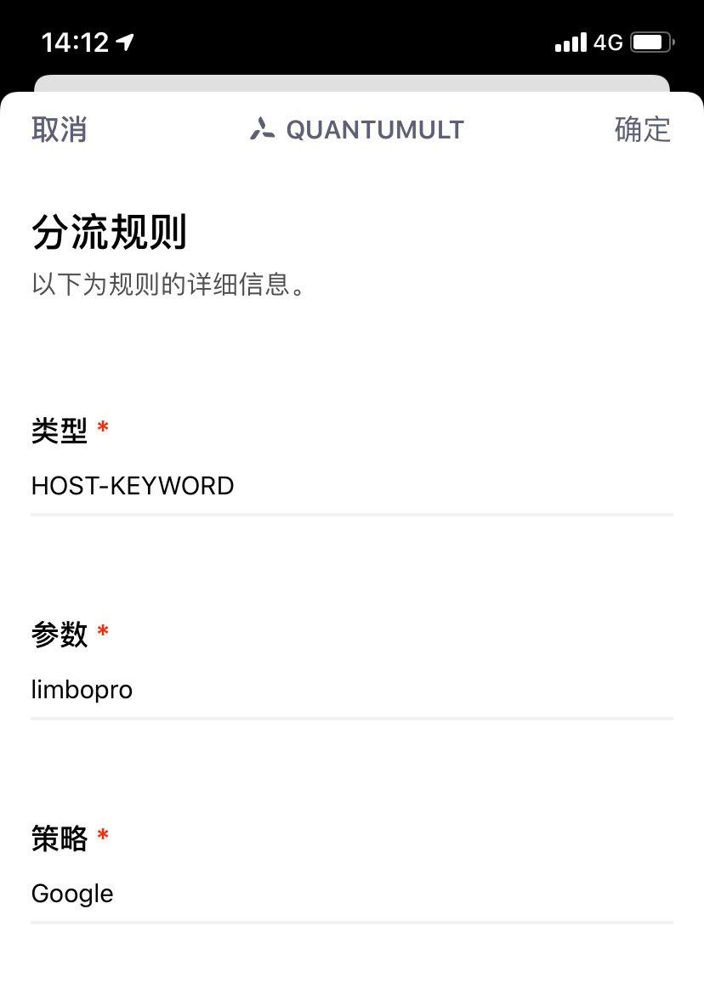
1.进入Quantumult X，点击右下角三菱按钮；
2.找到分流模块下添加按钮，点击；
3.填写相应类型，参数，策略选择刚刚创建的即可；
XIX. 订阅分流规则
1.进入Quantumult X，点击右下角三菱按钮；
2.找到分流模块下引用按钮，点击；
3.左滑任意分流规则的订阅（我这里是谷歌的订阅）；
4.点击编辑；
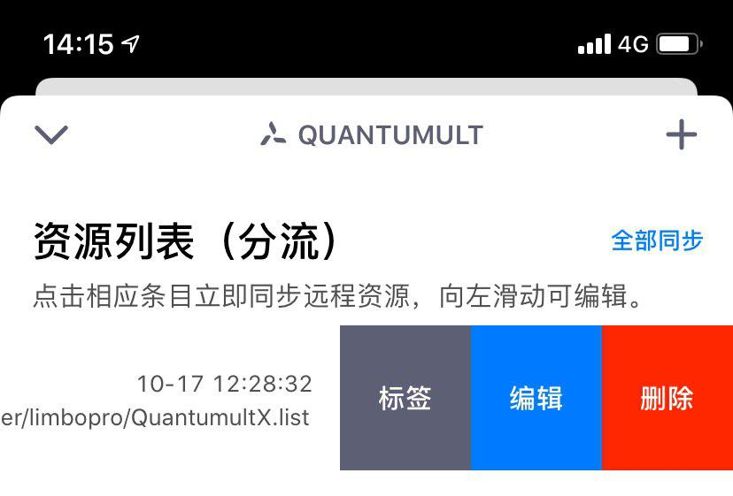
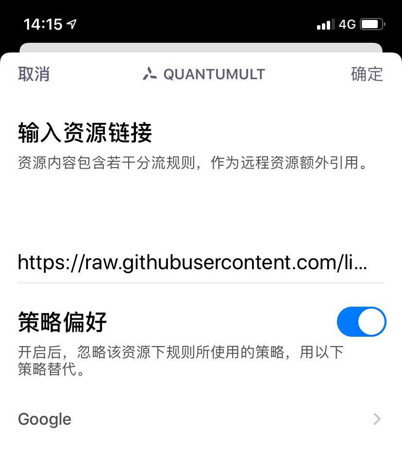
5.打开策略偏好，选择刚刚创建的策略，这里是Google;
到此，谷歌搜索均走Google策略下的节点了；
XX. 自定义策略及其图标
除了默认的PROXY策略，新创建的策略均可自定义图标；
步骤
1.进入Quantumult X，点击右下角三菱按钮；
2.找到配置文件模块下编辑按钮，点击；
3.找到[policy]
4.就可以看到刚刚创建的新策略及其选中的节点了；
[policy]
static=机场专线, 港深01, img-url=https://raw.githubusercontent.com/limbopro/Zure/master/IconSet/rocket.png
round-robin=Pornhub, 深港D, 深港E, img-url=https://raw.githubusercontent.com/zealson/Zure/master/IconSet/Pornhub.png
available=Google, 沪港02, 川港01, 京德01, img-url=https://raw.githubusercontent.com/limbopro/Zure/master/IconSet/Google.png5.只需在选中的节点后面，添加图标的地址即可；img-url=https://raw.githubusercontent.com/limbopro/Zure/master/IconSet/Google.png
XXI. 注意事项
0.节点名称后面记得加半角逗号（即英文的逗号,），参考正确示例；另外，不建议在 编辑这里直接修改策略模式名称AVAILABLE（健康检查-自动选择）/STATIC/ROUND-ROBIN，否则将导致策略不可用；
1.不建议在编辑配置文件这里直接修改策略名否则将导致策略不可用；如需重建或删除策略，请在编辑配置文件这里删掉该策略，直接删除即可，Quantumult X主页面的图标也会跟着消失；
正确示例
给新建的策略自定义图标示例：
available=Google, 节点1, 节点2, img-url=https://raw.githubusercontent.com/limbopro/Zure/master/IconSet/Google.pngXXII. 哪里搞图标
主理人自用图标：https://github.com/limbopro/Zure
引用源库：https://github.com/zealson/Zure https://github.com/Koolson/Qure
当然，你也可以folk，自己上传图标(108px*108px)以便进行自定义图标时引用；
XXIII. 节点分组及其分组图标设置
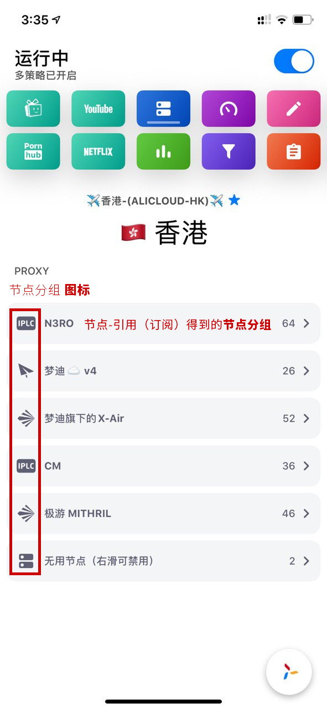
这个跟 自定义策略及其图标 的设置方法一模一样的；
1.进入Quantumult X，点击右下角三菱按钮；
2.找到配置文件模块下编辑按钮，点击；
3.找到[server_remote](其对应的是你的机场订阅链接)
4.参考示例：
[server_remote]
https://n3ro.***/link/****, tag=N3RO, enabled=true ,img-url=https://raw.githubusercontent.com/Koolson/Qure/master/IconSet/IPLC.png5.只需在选中的订阅链接后面，添加图标的地址即可；`img-url=https://raw.githubusercontent.com/Koolson/Qure/master/IconSet/IPLC.png
XXIV. 哪里搞图标
主理人自用图标：https://github.com/limbopro/Zure
引用源库：https://github.com/zealson/Zure https://github.com/Koolson/Qure
当然，你也可以folk，自己上传图标(108px*108px)以便进行自定义图标时引用；
XXV. 附加知识点 FAQ
XXVI. 图标双排
为什么我的策略图标是双排的（上下两排）？默认是一排；
XXVII. Quantumult X 双排的开启方式:
1.前提条件：有效使用时长累计大于12h (不是App运行时长)；
2.开启方式：最上面那栏滑到最左边，再往右拉两下（连续往右滑动）即可；
注：仅 iPhone 可开启简洁模式，iPad 单排双排小图标均无法开启；
XXVIII. 联系主理人
1.关注频道 https://t.me/limboprossr 不失联；
2.毒奶粉们（我管我的Fans）可联系 TG机器人 或发送 邮件 获取帮助；
3.或点击本页面右下角的聊天按钮联系；
XXIX. 附注
版权属于：毒奶
联系我们：https://limbopro.com/6.html
毒奶搜索：https://limbopro.com/search.html
毒奶导航：https://limbopro.com/daohang/index.html本文链接：https://limbopro.com/archives/3846.html
本文采用 CC BY-NC-SA 4.0 许可协议，转载或引用本文时请遵守许可协议，注明出处、不得用于商业用途！